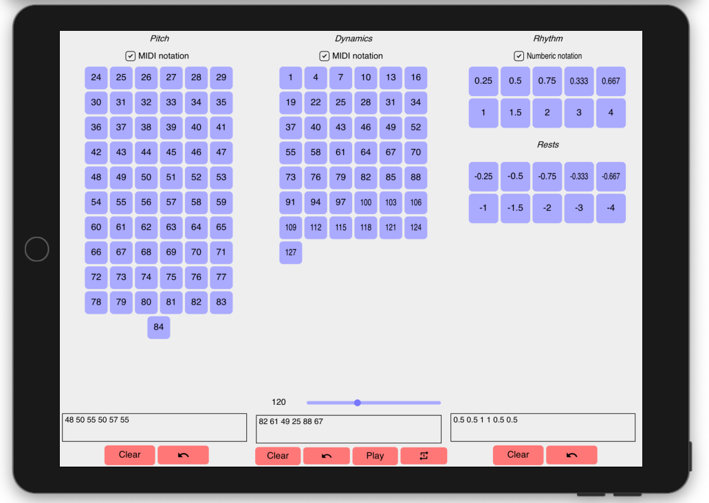
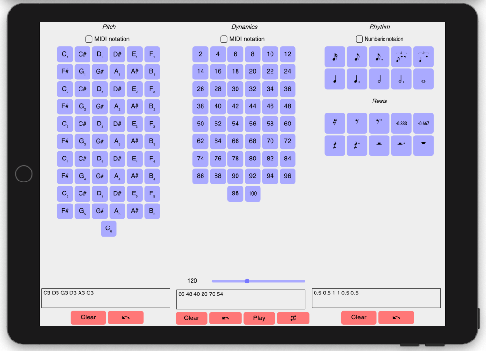
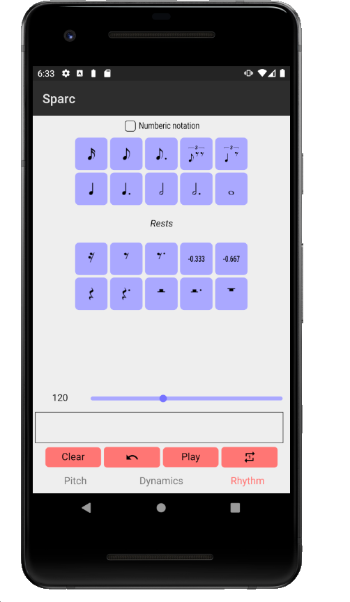

Sp/ARC: Specification/Audiation Real-time Composition environment
Sp/ARC: Specification/Audiation Real-time Composition Environment
Dr Ron Herrema, Bath Spa University
1. ABSTRACT
Sp/ARC (Specification/Audiation Real-time Composition) is a cross-platform mobile application that provides an environment intended to facilitate creative musical flow, from initial impulse through production to dissemination, doing so through a simple text-based interface that implements some of the features of Paul Berg’s venerable Lisp-based, desktop application AC Toolbox. It also draws on composer Julio Estrada’s concept of composing with continua, as well as on Steve Reich’s related phase-shift techniques. In its current form, the application is monophonic and, as such, creates a fruitful compositional constraint. The app can also be seen as a manifestation of the composer’s recent investigations into Code as Prosthesis, as it attempts to employ a live-coding dynamic that seeks a kind of compositional effortlessness (Wu Wei) that integrates audiation (the inner ear), listening (the outer ear), and specification (intellectual proposition). Sp/ARC has been built with JUCE, making use of its physical modelling library. As envisioned, the app will enable both Bluetooth MIDI transmission and the immediate uploading of improvised recordings to YouTube, etc.
2. BIO
Ron Herrema is a composer of music, image, sound and code. In recent years he has been awarded an Automation Fellowship by SWCTN and published on his concept of Code as Prosthesis; developed three iPhone app/artworks; co-produced the winning entry at The Tate Modern's art hackathon; performed free improv in East London's Chisenhale Dance Space; composed music for an award-winning documentary; created an interactive installation for the Tate Britain; and been awarded a Chagrin Award by Sound and Music.
He composes both acoustic and electroacoustic music, as well as both still and moving image. He has a particular (but not exclusive) affinity for algorithmic techniques in both realms. Currently residing in Bath, England, he is a native of Grand Rapids, Michigan and received his PhD in composition from Michigan State University. He teaches Creative Computing at Bath Spa University and previously led creative tech workshops for the London-based educational startup Codasign, as well as for London Music Hackspace.
He is a certified teacher of Deep Listening®, having studied for several years with DL founder Pauline Oliveros. He has a related interest in integrating contemplative practices with technology and continues to look for ways to flow musically into, with, and through the world.
3. LINKS
Sp/ARC demo playlist on Youtube
4. MEDIA


Sp/ARC on an iPad using MIDI notation.


Sp\ARC on an iPad using traditional notation.


Sp/ARC on an Android device.
5 . ACKNOWLEDGEMENTS
Thanks to Kieran Harte for his work on the app’s programming.
The work has been supported by an Automation Fellowship from the Southwest Creative Technology Network.